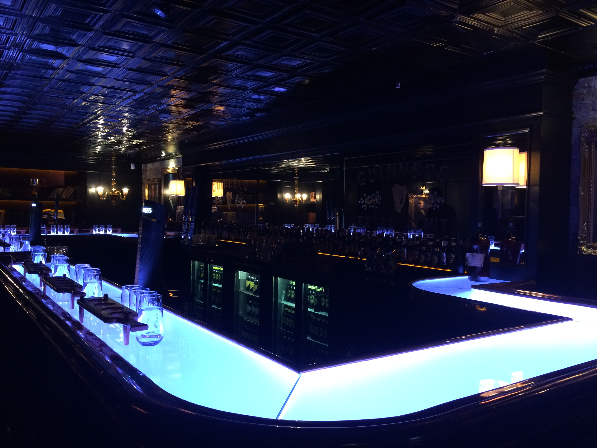
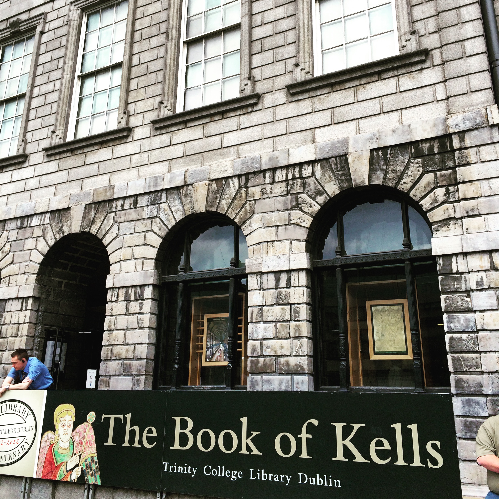
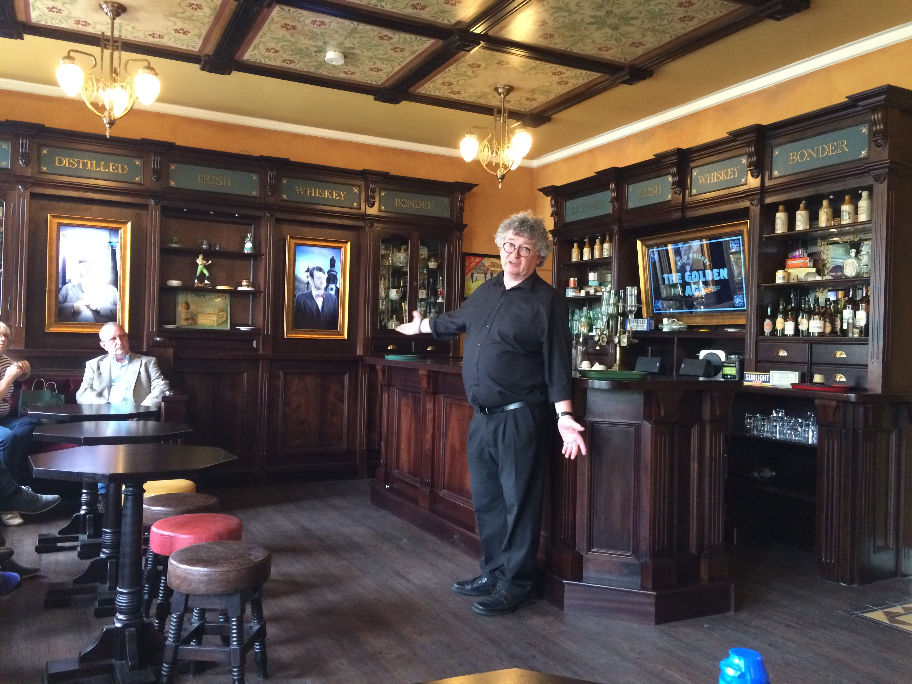
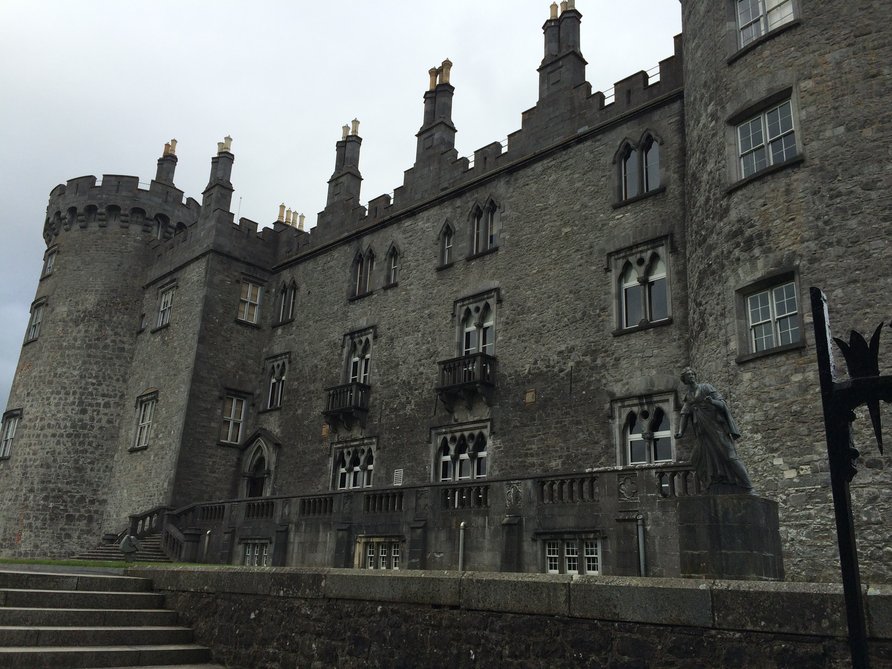
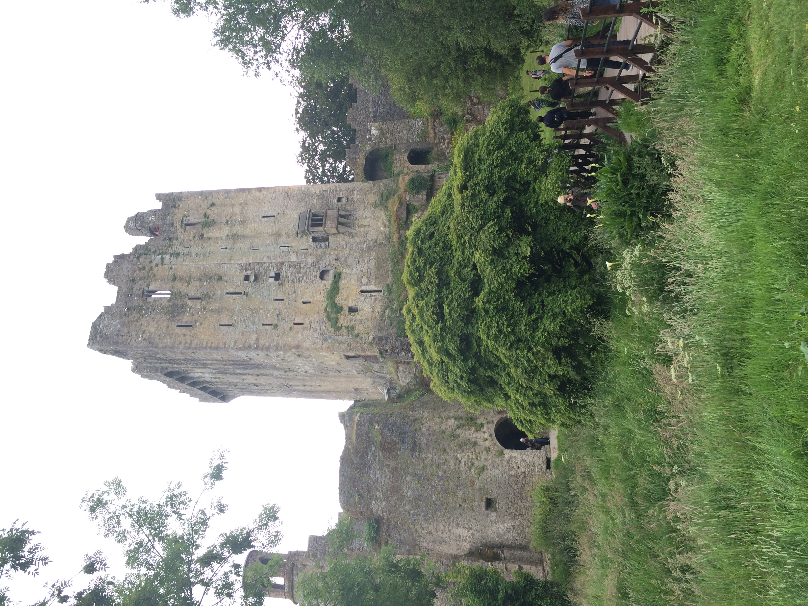
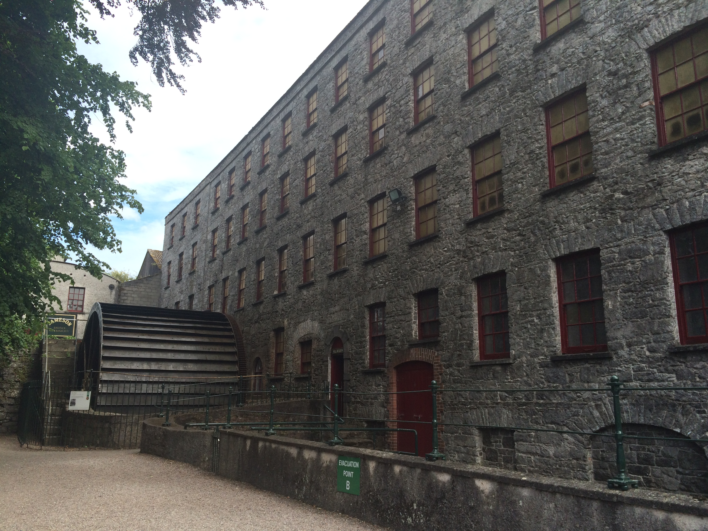
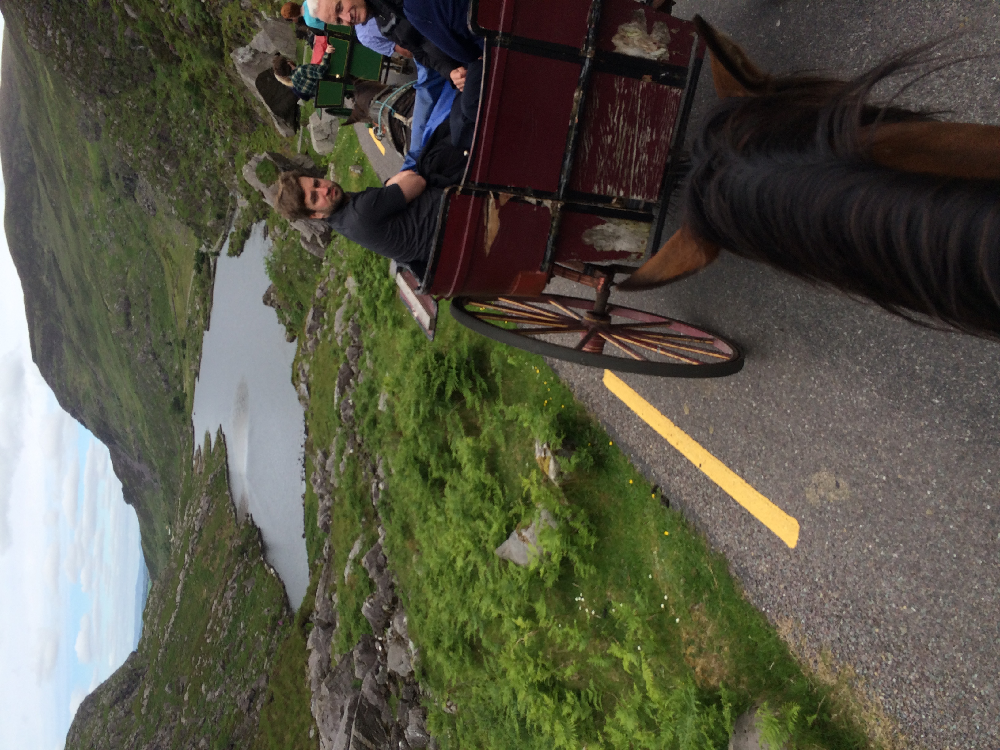
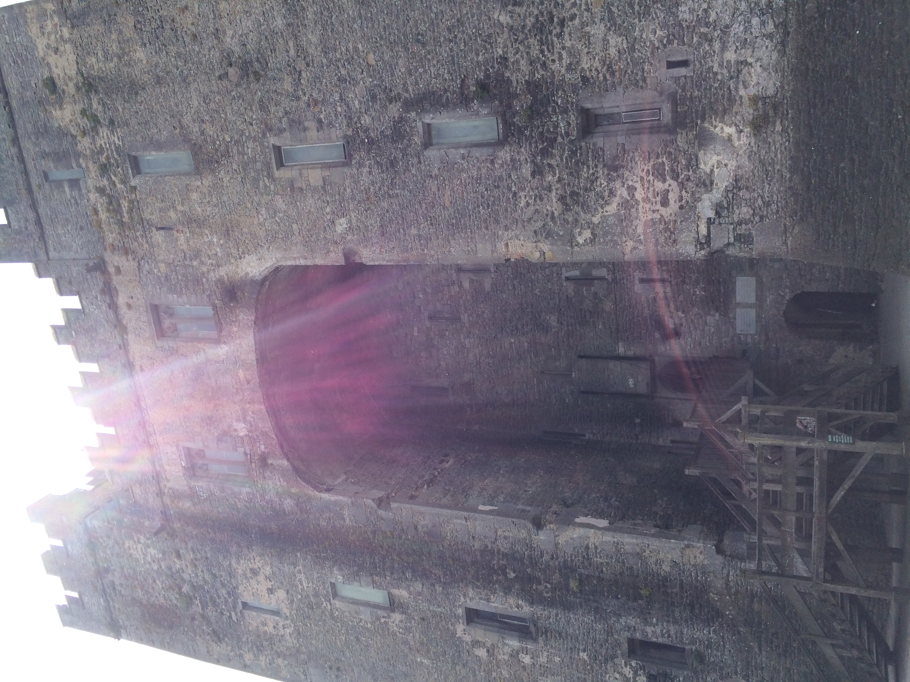
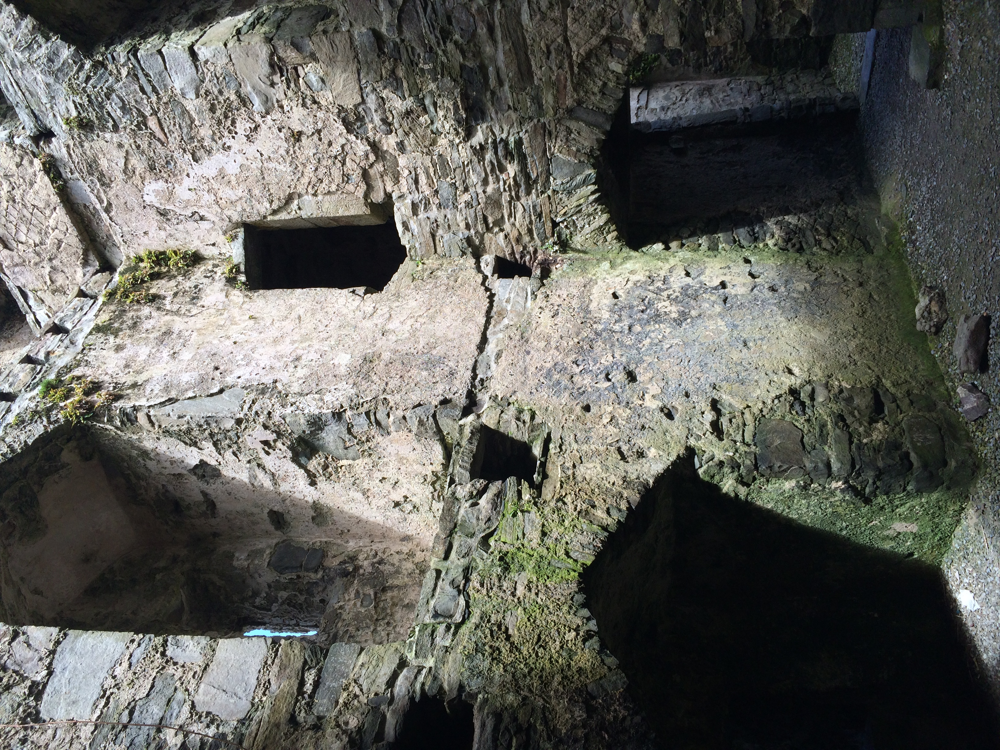

Dublin
-

Guinness Brewery
Our first stop after checking out our lodging for the next couple of days was the Guinness Brewery. We even had a special VIP tasting in a secluded bar.
-

Trinity College Library and the Book of Kells
A must see was the ancient manuscript called the Book of Kells. Trinity College has a beautiful display and educational exhibit on the practices of that time period.
-

Irish Whiskey Museum
Who could pass up the Irish Whiskey Museum? Information on how it was made, why it made, and every bit of Irish whiskey history you could want.
Cork
Cork was our second stop after heading out of the city. We stayed in a very charming town oustide of Cork called Kinsale. Some notable activities in the area (or visited on the way to Cork).
-

Kilkenny Castle
The mediveal town of Kilkenny was a stop on our way to Cork. We hit up the Smithwick's brewery and walked through the town to Kilkenny Castle. Next to the castle was a lovely artists' market as well.
-

Blarney Castle
I've been told that no trip to Ireland is complete without kissing the Blarney Stone. I guess my trip wasn't complete...though, we DID visit it.
-

Jameson Distillery
The Jameson distillery was definietly a place we had to visit. The tour was great and so was the whiskey. My whiskey knowledge was increased significantly on this trip!
Galway
Galway, the final stop before heading to Dublin for the flight home. We saw many things on the way there, or near the city.
-

Gap of Dunloe
We took a carraige ride and horseback ride through the Gap of Dunloe, experiencing the beauty of Irelands National Park.
-

Bunratty Castle
Bunratty Castle and Folk Park is one of the neatest Medieval recreations. The villiage is contains historically recreated buildings, people that have learned the old crafts, and the restored castle.
-

Clare Island
We visited one of Grace O'Malley's castles on Clare Island. After a boat ride out to the island, and a failed attempt at riding a bike through the hills, we just enjoyed the natural island beauty.